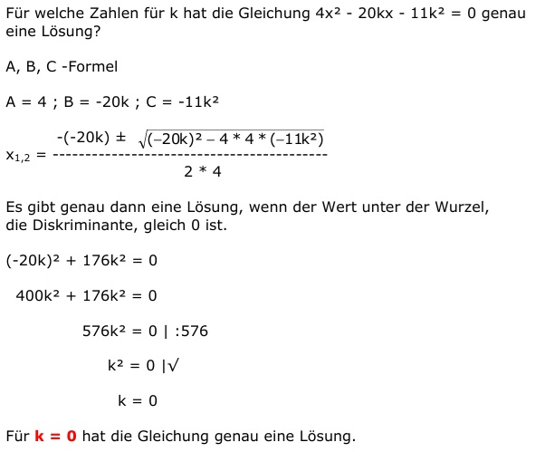

Quadratische Gleichungen Aufgabe 80 Für welche Zahlen für k hat die Gleichung 4x2 - 20kx - 11k2 = 0 genau eine Lösung? A, B, C-Formel A = 4 ; B = -20k ; C = -11k2  Es gibt genau dann eine Lösung, wenn der Wert unter der Wurzel, die Diskriminante, gleich 0 ist. (-20k)2 + 176k2 = 0 400k2 + 176k2 = 0 576k2 = 0 | :576 k2 = 0 |√ k = 0 Für k = 0 hat die Gleichung genau eine Lösung.